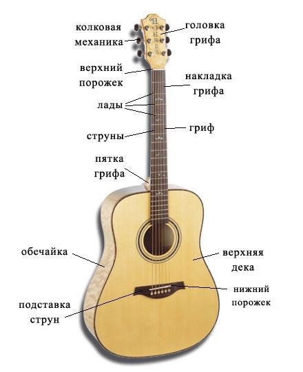

♪ Устройство гитары

Основные элементы гитары
Корпус (дека)
Это основная часть гитары, определяющая её тип и характер резонанса.
- Акустическая/классическая: полый корпус, который служит природным усилителем звука.
- Электрогитара: обычно цельный кусок дерева, который служит основой для электроники.
- Обечайки и нижняя дека: боковые и задняя части, формирующие объём и окраску звука.
Гриф
Длинная деревянная деталь, вдоль которой натянуты струны.
- Накладка: верхний слой дерева на грифе, по которому перемещаются пальцы.
- Анкер: стальной стержень внутри грифа, который помогает регулировать его прогиб.
- Пятка: место соединения грифа с корпусом.
Струны
Источник первичного звука. Их вибрация создаёт звуковые волны.
- Материал: нейлон или металл.
- Калибр: толщина струн влияет на удобство игры и силу звука.
- Обмотка: басовые струны имеют сердечник с обмоткой.
Лады
Металлические порожки, расположенные на накладке грифа.
- Помогают изменять длину струны и высоту звука.
- Расположение ладов рассчитывается математически.
- Со временем могут изнашиваться.
Колки
Механизмы, расположенные на головке грифа.
- Используются для натяжения и настройки струн.
- Бывают открытые и закрытые.
- Локовые колки лучше удерживают строй.
Корпус усиливает звук инструмента. Гриф нужен для зажатия струн и изменения высоты звука. Струны создают звук, колки используются для настройки, а лады помогают брать ноты в нужной позиции.
Также может быть добавлена схема гитары с подписями.